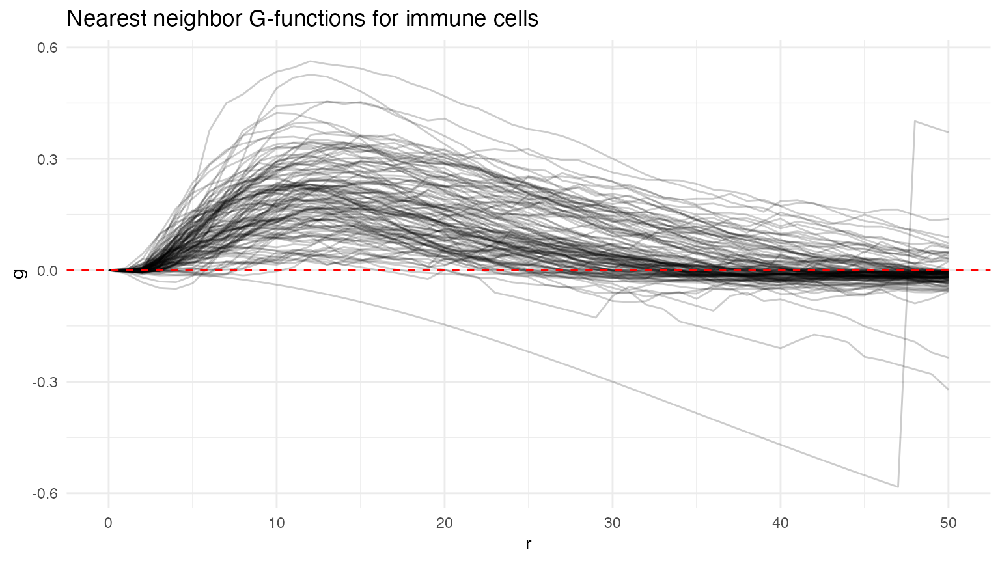
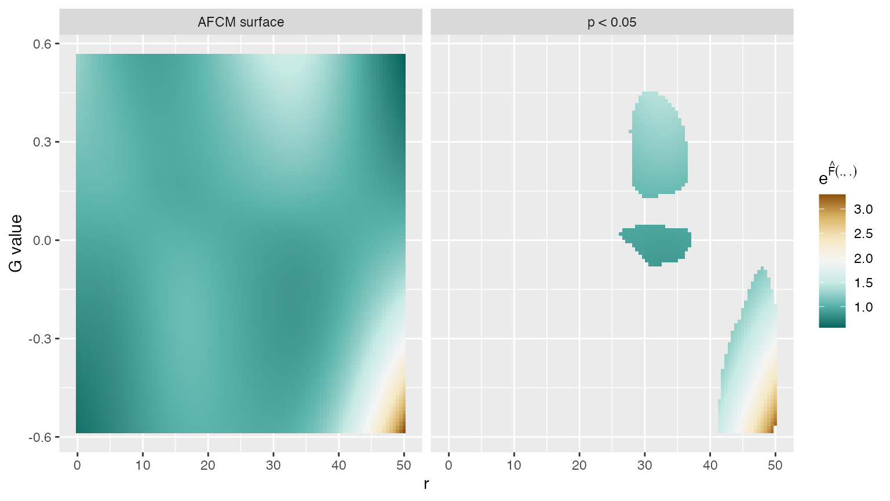

A note on data formatting
Use of this package requires that data be in a specific format: a
long-form data frame with variables id, index,
and value, where the value column contains
functional observations for all subjects, the id column
identifies which observations belong to which subject, and
index provides the grid (domain) over which the
values are observed.
The variable id should be a unique identifier in that
each id identifies a single subject. Since we assume there is only one
curve per subject for this package, id uniquely identifies
each curve as well. Other covariates can be included in the data as long
as the variables id, index, and
value are present.
Ovarian cancer multiplex imaging data
Here we load data from the Ovarian cancer dataset that where
univariate nearest-neighbor G-functions for immune cells have already
been extracted. See the vignette mxfda::mx_fda for more
details on extracting spatial summary functions.
data("ovarian_FDA")Visualize functions below. Interpret.
plot(ovarian_FDA, y = "fundiff", what = "uni g") +
geom_hline(yintercept = 0, color = "red", linetype = 2) +
theme_minimal() 
Functional regression models for survival outcomes
Cox regression using functional principal components as predictors
Runs FPCA and appends scores that explain up to 99% variance
ovarian_FDA <- run_fpca(ovarian_FDA, metric = "uni g", r = "r", value = "fundiff",
lightweight = TRUE,
pve = .99)
ovarian_FDA
#> mxFDA Object:
#> Subjects: 128
#> Samples: 128
#> Has spatial data
#> Univariate Summaries: Gest
#> Bivariate Summaries: None
#> FPCs Calculated:
#> Gest: 6 FPCs describe 99.2% variance
#> MFPCs not yet calculated
#> FCMs not yet calculated
#> MFCMs not yet calculatedvisualize
Gdf_fpc = extract_fpca_scores(ovarian_FDA, 'uni g fpca')
p1 = Gdf_fpc %>%
ggplot(aes(fpc1, survival_time, color = factor(event))) +
geom_point() + ggtitle("fpc1") +
theme(legend.position = "none")
p2 = Gdf_fpc %>%
ggplot(aes(fpc2, survival_time, color = factor(event))) +
geom_point() + ggtitle("fpc2") +
theme(legend.position = "none")
p3 = Gdf_fpc %>%
ggplot(aes(fpc3, survival_time, color = factor(event))) +
geom_point() + ggtitle("fpc3") +
theme(legend.position = "bottom")
p4 = Gdf_fpc %>%
ggplot(aes(fpc4, survival_time, color = factor(event))) +
geom_point() + ggtitle("fpc4") +
theme(legend.position = "bottom")
(p1 + p2)/(p3 + p4)
Use fpc scores in cox regression model
library(survival)
phmod_fpc = coxph(Surv(survival_time, event) ~ fpc1 + fpc2 + fpc3 + fpc4 + age,
data = Gdf_fpc)
summary(phmod_fpc)
#> Call:
#> coxph(formula = Surv(survival_time, event) ~ fpc1 + fpc2 + fpc3 +
#> fpc4 + age, data = Gdf_fpc)
#>
#> n= 128, number of events= 80
#>
#> coef exp(coef) se(coef) z Pr(>|z|)
#> fpc1 1.47768 4.38278 0.27109 5.451 5.01e-08 ***
#> fpc2 0.14640 1.15766 0.46700 0.313 0.753907
#> fpc3 4.13781 62.66520 1.10092 3.759 0.000171 ***
#> fpc4 -3.34887 0.03512 1.50783 -2.221 0.026352 *
#> age 0.02916 1.02958 0.01119 2.604 0.009201 **
#> ---
#> Signif. codes: 0 '***' 0.001 '**' 0.01 '*' 0.05 '.' 0.1 ' ' 1
#>
#> exp(coef) exp(-coef) lower .95 upper .95
#> fpc1 4.38278 0.22817 2.576315 7.4559
#> fpc2 1.15766 0.86381 0.463524 2.8913
#> fpc3 62.66520 0.01596 7.243091 542.1618
#> fpc4 0.03512 28.47048 0.001829 0.6746
#> age 1.02958 0.97127 1.007241 1.0524
#>
#> Concordance= 0.709 (se = 0.032 )
#> Likelihood ratio test= 44.38 on 5 df, p=2e-08
#> Wald test = 45.34 on 5 df, p=1e-08
#> Score (logrank) test = 50.34 on 5 df, p=1e-09linear and additive functional Cox regression models
Linear functional cox model takes the form:
Using age and gender and stage as scalar covariates
LFCM
ovarian_FDA = run_fcm(ovarian_FDA, model_name = "fit_lfcm",
formula = survival_time ~ age, event = "event",
metric = "uni g", r = "r", value = "fundiff",
analysis_vars = c("age", "survival_time"),
afcm = FALSE)
class(extract_model(ovarian_FDA, 'uni g', 'fit_lfcm'))
#> [1] "lfcm" "gam" "glm" "lm"
summary(extract_model(ovarian_FDA, 'uni g', 'fit_lfcm'))
#>
#> Family: Cox PH
#> Link function: identity
#>
#> Formula:
#> survival_time ~ age + s(t_int, by = l_int * func, bs = "cr",
#> k = 20)
#>
#> Parametric coefficients:
#> Estimate Std. Error z value Pr(>|z|)
#> age 0.03083 0.01136 2.714 0.00664 **
#> ---
#> Signif. codes: 0 '***' 0.001 '**' 0.01 '*' 0.05 '.' 0.1 ' ' 1
#>
#> Approximate significance of smooth terms:
#> edf Ref.df Chi.sq p-value
#> s(t_int):l_int * func 4.286 4.759 41.02 4.76e-07 ***
#> ---
#> Signif. codes: 0 '***' 0.001 '**' 0.01 '*' 0.05 '.' 0.1 ' ' 1
#>
#> Deviance explained = 5.72%
#> -REML = 314.14 Scale est. = 1 n = 128Visualize coefficient function
lfcm_surface = extract_surface(ovarian_FDA, metric = "uni g", model = "fit_lfcm", analysis_vars = c("age"))
plot(lfcm_surface)AFCM
ovarian_FDA <- run_fcm(ovarian_FDA, model_name = "fit_afcm",
formula = survival_time ~ age, event = "event",
metric = "uni g", r = "r", value = "fundiff",
analysis_vars = c("age", "survival_time"),
afcm = TRUE)
class(extract_model(ovarian_FDA, 'uni g', 'fit_afcm'))
#> [1] "afcm" "gam" "glm" "lm"
summary(extract_model(ovarian_FDA, 'uni g', 'fit_afcm'))
#>
#> Family: Cox PH
#> Link function: identity
#>
#> Formula:
#> survival_time ~ age + ti(t_int, func, by = l_int, bs = c("cr",
#> "cr"), k = c(10, 10), mc = c(FALSE, TRUE))
#>
#> Parametric coefficients:
#> Estimate Std. Error z value Pr(>|z|)
#> age 0.02852 0.01162 2.454 0.0141 *
#> ---
#> Signif. codes: 0 '***' 0.001 '**' 0.01 '*' 0.05 '.' 0.1 ' ' 1
#>
#> Approximate significance of smooth terms:
#> edf Ref.df Chi.sq p-value
#> ti(t_int,func):l_int 8.248 10.52 55.88 <2e-16 ***
#> ---
#> Signif. codes: 0 '***' 0.001 '**' 0.01 '*' 0.05 '.' 0.1 ' ' 1
#>
#> Deviance explained = 10.7%
#> -REML = 310.05 Scale est. = 1 n = 128Visualize the afcm model
afcm_surface = extract_surface(ovarian_FDA, metric = "uni g", model = "fit_afcm", analysis_vars = c("age"), p = 0.05)
plot(afcm_surface)
Model summaries and C-index
C-index is a good way to compare across models, especially when incorporating cross validation.
# calculate overall p value for fpca
#fit_fpc_null = coxph(Surv(survival_time, event) ~ age, data = Gdf_fpc)
#p_fpc = anova(fit_fpc_null, phmod_fpc)
fit_afcm = extract_model(ovarian_FDA, 'uni g', 'fit_afcm')
fit_lfcm = extract_model(ovarian_FDA, 'uni g', 'fit_lfcm')
c_index = c(
rep(phmod_fpc$concordance[["concordance"]], times = 4),
extract_c(fit_lfcm, Gdf_fpc$survival_time, Gdf_fpc$event),
extract_c(fit_afcm, Gdf_fpc$survival_time, Gdf_fpc$event)
)
est_fpca = broom::tidy(phmod_fpc, exp = TRUE) %>%
mutate(model = "fpca", edf = NA) %>%
select(model, term, "hazard ratio" = estimate, edf, p = p.value)
est_lfcm = bind_rows(broom::tidy(fit_lfcm) %>%
mutate("hazard ratio" = NA, p = NA, model = "lfcm") %>%
select(model, term, "hazard ratio", edf, p),
broom::tidy(fit_lfcm, parametric = TRUE, exp = TRUE) %>%
mutate(edf = NA, model = "lfcm") %>%
select(model, term, "hazard ratio" = estimate, edf, p = p.value)
)
est_afcm = bind_rows(broom::tidy(fit_afcm) %>%
mutate("hazard ratio" = NA, p = NA, model = "afcm") %>%
select(model, term, "hazard ratio", edf, p),
broom::tidy(fit_afcm, parametric = TRUE, exp = TRUE) %>%
mutate(edf = NA, model = "afcm") %>%
select(model, term, "hazard ratio" = estimate, edf, p = p.value)
)
bind_rows(est_fpca, est_lfcm, est_afcm) %>%
filter(term != "age") %>%
mutate(p = format.pval(p, digits = 1),
"c-index" = c_index) %>%
knitr::kable(digits = 2)| model | term | hazard ratio | edf | p | c-index |
|---|---|---|---|---|---|
| fpca | fpc1 | 4.38 | NA | 5e-08 | 0.71 |
| fpca | fpc2 | 1.16 | NA | 0.75 | 0.71 |
| fpca | fpc3 | 62.67 | NA | 2e-04 | 0.71 |
| fpca | fpc4 | 0.04 | NA | 0.03 | 0.71 |
| lfcm | s(t_int):l_int * func | NA | 4.29 | NA | 0.73 |
| afcm | ti(t_int,func):l_int | NA | 8.25 | NA | 0.76 |